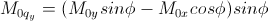

Polarization and Magnetic Scattering
The magnetic scattering is implemented in five (2D) models, SphereModel, CoreShellModel,
CoreMultiShellModel, CylinderModel, and ParallelepipedModel.
In general, the scattering length density (SLD) in each regions where the SLD (=β)
is uniform, is a combination of the nuclear and magnetic SLDs
and depends on the spin states of the neutrons as follows:
For magnetic scattering, only the magnetization component, Mperp,
perpendicular to the scattering vector Q contributes to the the magnetic
scattering length. (Figure below).

The magnetic scattering length density is then

where γ = -1.913 the gyromagnetic ratio, μB is the Bohr magneton,
r0 is the classical radius of electron,
and σ is the Pauli spin.
For polarized neutron, the magnetic scattering is depending on the spin states.
Let's consider that the incident neutrons are polarized parallel (+)/anti-parallel
(–) to the x' axis (See both Figures above).
The possible out-coming states then are + and - states for both incident states.
- Non-spin-flips: (+ +) and (- -)
- Spin-flips: (+ -) and (- +)

Now, let's assume that the angles of the Q vector and the spin-axis (x') against x-axis
are φ and θup, respectively (See Figure above).
Then, depending upon the polarization (spin) state of neutrons, the scattering length
densities , including the nuclear scattering length density (β N) are given as, for non-spin-flips,

for spin-flips,

where



Here, the M0x, M0y and M0z are the x, y and z
components of the magnetization vector given in the xyz lab frame.
The angles of the magnetization, θM and φM as defined in the
Figure (above),


The user input parameters are M0_sld = DMM0, Up_theta = θup,
M_theta = θM, and M_phi = φM.
The 'Up_frac_i' and 'Up_frac_f' are the ratio, (spin up) /(spin up + spin down) neutrons
before the sample and at the analyzer, respectively.
*Note: The values of the 'Up_frac_i' and 'Up_frac_f' must be in the range between 0 and 1.